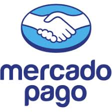
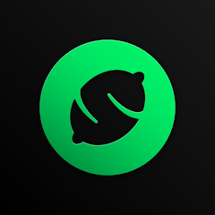
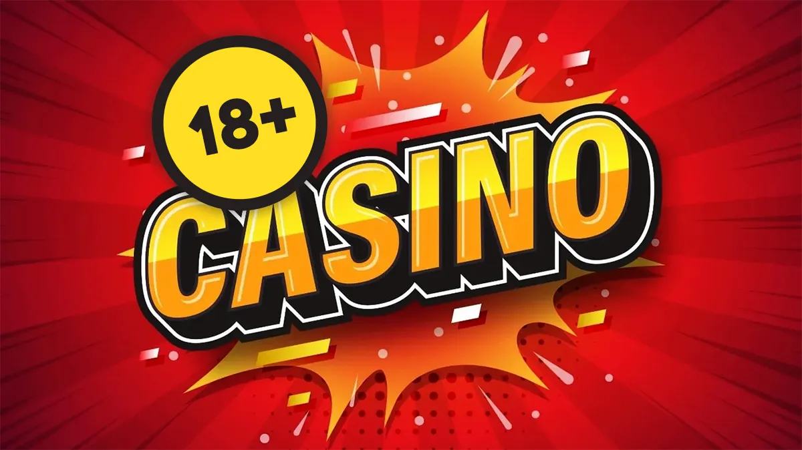
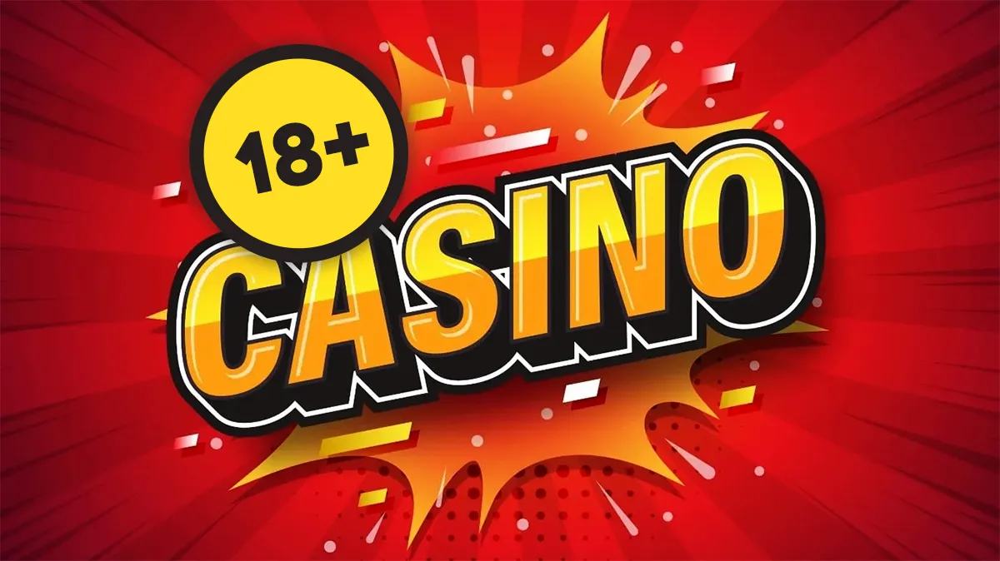
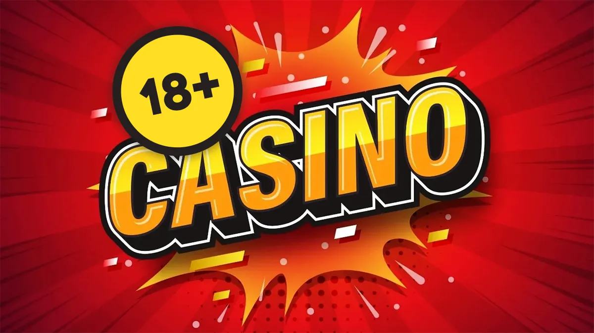

Cargar casino virtual con Mercado Pago y otras opciones
  

Disfruta de la comodidad de cargar tu casino online con Mercado Pago y retirar ganancias al instante. Atención personalizada las 24 horas.
¡Carga Ahora!

Comprar fichas de casino por WhatsApp es sencillo y rápido. Nuestro cajero de casino virtual 24hs está disponible las 24 horas del día para atender tus necesidades. Solo envía un mensaje con el monto deseado y el método de pago, como Mercado Pago, y procesamos tu carga al instante. La atención personalizada garantiza que cada transacción sea segura y eficiente.
La seguridad es nuestra prioridad. Utilizamos tecnologías avanzadas para proteger tus datos durante el proceso de cargar casino online con Mercado Pago. Todos los retiros al instante por WhatsApp se verifican para evitar fraudes, asegurando que tus ganancias lleguen directamente a tu cuenta sin demoras.
En 2026, somos el mejor casino virtual con Mercado Pago, ofreciendo promociones exclusivas y soporte continuo. Nuestra plataforma móvil-first asegura una experiencia fluida en cualquier dispositivo, con tiempos de carga optimizados para una puntuación alta en PageSpeed.
¿Buscas el mejor casino virtual con Mercado Pago? Nuestro servicio destaca por su rapidez en retiros y facilidad de uso. Con el cajero de casino virtual por WhatsApp, puedes gestionar tus fondos sin salir de casa. La integración con métodos como Lemon Cash y transferencias bancarias hace que sea accesible para todos.
La atención personalizada incluye respuestas inmediatas a tus consultas, asegurando que nunca estés solo en tu experiencia de juego. Además, promovemos el juego responsable con herramientas integradas para controlar tus apuestas.
En resumen, elegir nuestro cajero de casino virtual 24hs significa optar por conveniencia, seguridad y velocidad. Carga casino online con Mercado Pago hoy y disfruta de retiros al instante por WhatsApp. (Palabras totales: ~350)